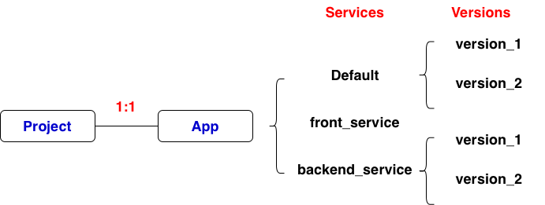

# Define environment
runtime: python311 # defines the language, version, and execution environment that runs application code
# Define service name
service: default # service name
# Define how to shart app
entrypoint: gunicorn -b :$PORT main:app # the command to start app
# Scaling
# automatic_scaling, standard default, adds/removes instances automatically
# basic_scaling, standard only, instances start on demand, shut down after idle timeout
# manual_scaling, standard only, fixed number of instances, always running
automatic_scaling: # adds/removes instances automatically
min_instances: 0
max_instances: 5
target_cpu_utilization: 0.6
# Resource Configuration
# Standard environment
# instance_class: F2
# Flexible Environment
# resources:
# cpu: 1
# memory_gb: 2
# disk_size_gb: 10
# Environment Variables
env_variables:
ENV: "prod"
LOG_LEVEL: "info"
# create app engine app gcloud app create # view app engine gcloud app describe # deploy gcloud app deploy # deploy gcloud app deploy app.yaml # deploy with specific app.yaml gcloud app deploy --version v2 # deploy with explicit version name # service gcloud app services list # list servies gcloud app services describe SERVICE_NAME # describe a service # version gcloud app versions list # list versions gcloud app versions list --service SERVICE_NAME # list versions in a service gcloud app versions describe VERSION --service SERVICE_NAME # describe a version in a service